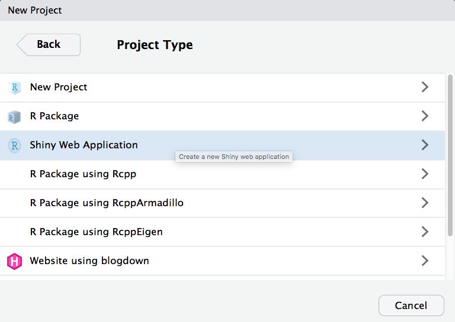
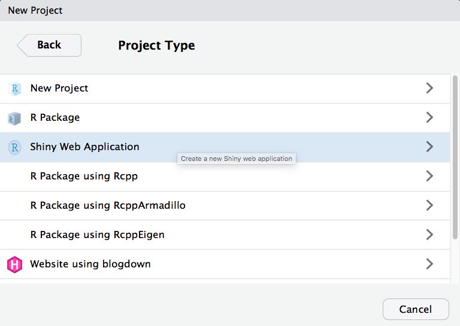

1 Your First Shiny App
1.1 The Demo App
To start, let’s walk through the basics of setting up a shiny app, starting with the example built into RStudio I won’t explain yet how shiny apps are structured; the goal is to just get something up and running, and give you some familiarity with the layout of a fairly simple app.
1.1.1 Set Up the Demo App
 

Figure 1.1: Creating a demo app.
Under the
Filemenu, chooseNew Project.... You will see a popup window like the one above. ChooseNew Directory.Choose
Shiny Web Applicationas the project type.I like to put all of my apps in the same directory, but it doesn’t matter where you save it.
Your RStudio interface should look like this now.
Figure 1.2: RStudio interface with the built-in demo app loaded.
If you are not using RStudio or your source code doesn’t look like this, replace it with the code below:
#
# This is a Shiny web application. You can run the application by clicking
# the 'Run App' button above.
#
# Find out more about building applications with Shiny here:
#
# http://shiny.rstudio.com/
#
library(shiny)
# Define UI for application that draws a histogram
ui <- fluidPage(
# Application title
titlePanel("Old Faithful Geyser Data"),
# Sidebar with a slider input for number of bins
sidebarLayout(
sidebarPanel(
sliderInput("bins",
"Number of bins:",
min = 1,
max = 50,
value = 30)
),
# Show a plot of the generated distribution
mainPanel(
plotOutput("distPlot")
)
)
)
# Define server logic required to draw a histogram
server <- function(input, output) {
output$distPlot <- renderPlot({
# generate bins based on input$bins from ui.R
x <- faithful[, 2]
bins <- seq(min(x), max(x), length.out = input$bins + 1)
# draw the histogram with the specified number of bins
hist(x, breaks = bins, col = 'darkgray', border = 'white')
})
}
# Run the application
shinyApp(ui = ui, server = server)Click on Run App in the top right corner of the source pane. The app will open up in a new window. Play with the slider and watch the histogram change.
Figure 1.3: Demo application interface
You can also open up the app in a web browser by clicking on Open in Browser.
1.1.2 Modify the Demo App
Now we’re going to make a series of changes to the demo app until it’s all your own.
You can close the app by closing the window or browser tab it’s running in and clicking the red stop sign in the console tab, or leave it running while you edit the code. If you have multiple screens, it can be useful to have the app open on one screen and the code on another.
Find the application title. It is the first argument to the function titlePanel. Change the title to "My First App". Make sure the title is inside quotes and the whole quoted string is inside the parentheses. Save the file (cmd-S or File > Save).
Figure 1.4: App with changed title.
Click Run App (or Reload App if you haven’t closed the app window) in the source pane. If you haven’t saved your changes, it will prompt you to do so. Check that the app title has changed.
Now let’s change the input. Find the function sliderInput() (line 21). The first argument is the name you can use in the code to find the value of this input, so don’t change it just yet. The second argument is the text that displays before the slider. Change this to something else and re-run the app.
sliderInput("bins",
"Number of bins:",
min = 0,
max = 50,
value = 30)See if you can figure out what the next three arguments to sliderInput() do. Change them to different integers, then re-run the app to see what’s changed.
The arguments to the function sidebarPanel() are just a list of things you want to display in the sidebar. To add some explanatory text in a paragraph before sliderInput(), just use the paragraph function p().
sidebarPanel(
p("I am explaining this perfectly"),
sliderInput("bins",
"Choose the best bin number:",
min = 10,
max = 40,
value = 25)
)
Figure 1.5: Sidebar with an added paragraph.
The sidebar shows up on the left if your window is wide enough, but moves to the top of the screen if it’s too narrow.
I don’t like it there, so we can move this text out of the sidebar and to the top of the page, just under the title. Try this and re-run the app.
# Application title
titlePanel("My First App"),
p("I am explaining this perfectly"),
# Sidebar with a slider input for number of bins
sidebarLayout(...)See where you can move the text in the layout of the page and where causes errors.
I’m also not keen on the grey plot. We can change the plot colour inside hist()
# draw the histogram with the specified number of bins
hist(x, breaks = bins, col = 'steelblue3', border = 'grey30')There are a lot of ways to represent colour in R. The easiest three are:
- hexadecimal colours (e.g.,
"#0066CC") - the
rgborhslfunctions (e.g.,rgb(0, .4, .8)) - colour names (type
colours()in the console)
The color “steelblue3” is pretty close to the shiny interface default colour, but feel free to choose whatever you like.
I prefer ggplots, so let’s make the plot with geom_histogram() instead of hist() (which is a great function for really quick plots). Since we need several functions from the ggplot2 package, we’ll need to load that package at the top of the script, just under where the shiny package is loaded:
library(shiny)
library(ggplot2)You can replace all of the code in renderPlot() with the code below.
output$distPlot <- renderPlot({
# create plot
ggplot(faithful, aes(waiting)) +
geom_histogram(bins = input$bins,
fill = "steelblue3",
colour = "grey30") +
xlab("What are we even plotting here?") +
theme_minimal()
})You can set fill and colour to whatever colours you like, and change theme_minimal() to one of the other built-in ggplot themes.
What are we even plotting here? Type ?faithful into the console pane to see what the waiting column represents (faithful is a built-in demo dataset). Change the label on the x-axis to something more sensible.
1.1.3 Add New Things
The faithful dataset includes two columns:eruptions and waiting. We’ve been plotting the waiting variable, but what if you wanted to plot the eruptions variable instead?
Try plotting the eruption time (eruptions) instead of the waiting time. You just have to change one word in ggplot() and update the x-axis label.
We can add another input widget to let the user switch between plotting eruption time and wait time. We’ll learn more about the different input options in Section 3. We need to toggle between two options, so we can use either radio buttons or a select box. Radio buttons are probably best if you have only a few options and the user will want to see them all at the same time to decide.
Add the following code as the first argument to sidebarPanel(), which just takes a list of different widgets. radioButtons() is the widget we’re using. We’ll set four arguments:
inputId: a unique identifier that we will use later in the code to find the value of this widgetlabel: the text to display to the userchoices: a list of choices in the formatc("label1" = "value1", "label2 = "value2", ...)selected: the value of the default choice
For choices, the label is what gets shown to the user and the value is what gets used by the code (these can be the same, but you often want the user label to be more descriptive).
radioButtons(inputId = "display_var",
label = "Which variable to display",
choices = c("Waiting time to next eruption" = "waiting",
"Eruption time" = "eruptions"),
selected = "waiting"
),Save this and re-run the app.

Figure 1.6: A radioButton widget above a sliderInput widget.
You should have a radio button interface now. You can click on the options to switch the button, but it won’t do anything to your plot yet. We need to edit the plot-generating code to make that happen.
First, we need to change the x-axis label depending on what we’re graphing. We use an if/else statement to set the variable xlabel to one thing if input$display_var is equivalent to "eruptions", and to something else if it’s equivalent to "waiting". Put this code at the very beginning of the code block for renderPlot() (after the line output$distPlot <- renderPlot({).
# set x-axis label depending on the value of display_var
if (input$display_var == "eruptions") {
xlabel <- "Eruption Time (in minutes)"
} else if (input$display_var == "waiting") {
xlabel <- "Waiting Time to Next Eruption (in minutes)"
}The double-equal-signs == means "equivalent to and is how you check if two things are the same; if you only use one equal sign, you set the variable on the left to the value on the right.
Then we have to edit ggplot to use the new label and to plot the correct column. The variable input$display_var gives you the user-input value of the widget called "display_var".
# create plot
ggplot(faithful, aes(.data[[input$display_var]])) +
geom_histogram(bins = input$bins,
fill = "steelblue3",
colour = "grey30") +
xlab(xlabel) +
theme_minimal()Notice that the code aes(waiting) from before has changed to aes(.data[[input$display_var]]). Because input$display_var is a string, we have to select it from the .data placeholder (which refers to the faithful data table) using double brackets.
Re-run your app and see if you can change the data and x-axis label with your new widget.
Figure 1.7: First Demo App. You can also access this app with shinyintro::app("first_demo")or view it in a separate tab with the showcase interface.
1.2 App Structure
Now that we’ve made and modified our first working app, it’s time to learn a bit about how a shiny app is structured.
A shiny app is made of two main parts, a UI, which defines what the user interface looks like, and a server function, which defines how the interface behaves. The function shinyApp() puts the two together to run the application in a web browser.
# Setup ----
library(shiny)
# Define UI ----
ui <- fluidPage()
# Define server logic ----
server <- function(input, output) {
}
# Run the application ----
shinyApp(ui = ui, server = server)Create a new app called “basic_demo” and replace all the text in app.R with the code above. You should be able to run the app and see just a blank page.
1.2.1 UI
The UI is created by one of the ui-building \*Page() functions, such as fluidPage(), fixedPage(), fillPage() or dashboardPage() (which we’ll learn more about in Section 2). The ui-building functions set up the parts of the webpage, which are created by more shiny functions that you list inside of the page function, separated by commas.
1.2.3 Page Layout
You usually want your apps to have a more complex layout than just each element stacked below the previous one. The code below wraps the elements after the title panel inside flowLayout().
ui <- fluidPage(titlePanel("Basic Demo"),
flowLayout(
h2("My favourite things"),
tags$ul(tags$li("Coding"),
tags$li("Cycling"),
tags$li("Cooking")),
p("This is a very basic demo."),
tags$img(
src = "https://debruine.github.io/shinyintro/images/shinyintro.png",
width = "100px",
height = "100px"
)
))Replace the ui code in your basic_demo app with the code above and run it in a web browser. What happens when you change the width of the web browser? Change flowLayout() to verticalLayout() or splitLayout() and see what changes.
You can use a sidebarLayout() to arrange your elements into a sidebarPanel() and a mainPanel(). If the browser width is too narrow, the sidebar will display on top of the main panel.
ui <- fluidPage(titlePanel("Basic Demo"),
sidebarLayout(sidebarPanel(
h2("My favourite things"),
tags$ul(tags$li("Coding"),
tags$li("Cycling"),
tags$li("Cooking"))
),
mainPanel(
p("This is a very basic demo."),
tags$img(
src = "https://debruine.github.io/shinyintro/images/shinyintro.png",
width = "100px",
height = "100px"
)
)))1.3 Dynamic Elements
So far, we’ve just put static elements into our UI. What makes Shiny apps work is dynamic elements like inputs, outputs, and action buttons.
1.3.1 Inputs
Inputs are ways for the users of your app to communicate with the app, like drop-down menus or checkboxes. We’ll go into the different types of inputs in Section 3. Below we’ll turn the list of favourite things into a group of checkboxes
checkboxGroupInput(
inputId = "fav_things",
label = "What are your favourite things?",
choices = c("Coding", "Cycling", "Cooking")
)Most inputs are structured like this, with an inputId, which needs to be a unique string not used as the ID for any other input or output in your app, a label that contains the question, and a list of choices or other parameters that determine what type of values the input will record.
You might have noticed that the sliderInput() in the demo app didn’t use the argument names for the inputId or the label(). All inputs need these first two arguments, so almost everyone omits their names.
1.3.2 Outputs
Outputs are placeholders for things that server() will create. There are different output functions for different types of outputs, like text, plots, and tables. We’ll go into the different types of outputs in detail in Section 4. Below, we’ll make a placeholder for some text that we’ll display after counting the number of favourite things.
textOutput(outputId = "n_fav_things")Most outputs are structured like this, with just a unique outputId (the argument name is also usually omitted).
1.4 Reactive functions
Reactive functions are functions that only run when certain types of inputs change. Inside server(), the object input is a named list of the values of all of the inputs. For example, if you want to know which items in the select input named "fav_things" were selected, you would use input$fav_things.
Here, we just want to count how many items are checked. We want to do this whenever the button "count_fav_things" is clicked, so we can use the reactive function observeEvent() to do this. Every time the value of input$count_fav_things changes (which happens when it is clicked), it will run the code inside of the curly brackets {}. The code will only run when input$count_fav_things changes, not when any inputs inside the function change.
server <- function(input, output) {
# count favourite things
observeEvent(input$count_fav_things, {
n <- length(input$fav_things)
count_text <- sprintf("You have %d favourite things", n)
})
}Now we want to display this text in the output "n_fav_things". We need to use a render function that is paired with our output function. Since “n_fav_things” was made with textOutput(), we fill it with renderText().
server <- function(input, output) {
# count favourite things
observeEvent(input$count_fav_things, {
n <- length(input$fav_things)
count_text <- sprintf("You have %d favourite things", n)
output$n_fav_things <- renderText(count_text)
})
}As always in coding, there are many ways to accomplish the same thing. These methods have different pros and cons that we’ll learn more about in Section 5. Here is another pattern that does that same as above.
This pattern uses reactive() to create a new function called count_text(), which updates the value it returns whenever any inputs inside the reactive function change. We use isolate() to prevent count_text() from changing when users click the checkboxes.
Whenever the returned value of count_text() changes, this triggers an update of the "n_fav_things" output.
server <- function(input, output) {
# update count_text on fav_things
count_text <- reactive({
input$count_fav_things # just here to trigger the reactive
fav_things <-
isolate(input$fav_things) # don't trigger on checks
n <- length(fav_things)
sprintf("You have %d favourite things", n)
})
# display count_text when it updates
output$n_fav_things <- renderText(count_text())
}Compare the app behaviour with the first pattern versus the second. How are they different? What happens if you remove isolate() from around input$fav_things?
1.5 Further Resources
1.6 Exercises
1.6.1 Addition App - UI
Create the UI for following addition app. Use numericInput() to create the inputs.
Figure 1.8: Add Demo App. You can also access this app with shinyintro::app("add_demo")or view it in a separate tab with the showcase interface.
ui <- fluidPage(titlePanel("Addition Demo"),
sidebarLayout(
sidebarPanel(
numericInput("n1", "First number", 0),
numericInput("n2", "Second number", 0),
actionButton("add", "Add Numbers")
),
mainPanel(textOutput(outputId = "n1_plus_n2"))
))1.6.2 observeEvent
Use observeEvent() to write a server function that displays “n1 + n2 = sum” when you click the action button.
server <- function(input, output) {
# add numbers
observeEvent(input$add, {
sum <- input$n1 + input$n2
add_text <- sprintf("%d + %d = %d", input$n1, input$n2, sum)
output$n1_plus_n2 <- renderText(add_text)
})
}1.6.3 reactive
Use reactive() to accomplish the same behaviour.
server <- function(input, output) {
add_text <- reactive({
input$add # triggers reactive
n1 <- isolate(input$n1)
n2 <- isolate(input$n2)
sprintf("%d + %d = %d", n1, n2, n1 + n2)
})
output$n1_plus_n2 <- renderText(add_text())
}